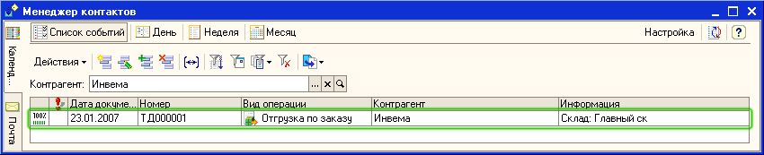

Контрагент Инвема работает с нами на условиях предоплаты, поэтому прежде чем оформить отгрузку товаров по счету (заказу покупателя) необходимо проконтролировать, что покупатель оплатил выставленный счет. Для контроля оплаты счета используется Календарь пользователя, который входит в обработку Менеджер контактов.
1. Откройте обработку Календарь пользователя. Для этого в меню Документы выберите пункт Управление отношениями с клиентами, затем подпункт Менеджер контактов - Календарь пользователя.
2. Для того, чтобы в календаре пользователя отобразились заказы покупателей, нажмите на кнопку Настройка и в появившемся диалоговом окне установите флаг Отображать заказы покупателей, так как это показано на рисунке и нажмите на кнопку ОК.
В календаре пользователя отобразится состояние счетов на оплату (заказов покупателей).

Поскольку в нашем примере уже зарегистрирована оплата от клиента Инвема, то в календаре пользователя в записи о состоянии заказа установлено, что оплата произведена полностью (100% помечено зеленым цветом) - можно отгружать товар.
3. Документы отгрузки оформим на основании выписанного ранее Заказа покупателя. В календаре пользователя выделите строку с видом операции Отгрузка по заказу и нажмите на кнопку  (или щелкните правой кнопкой мыши и в открывшемся меню выберите На основании). Выберите в предложенном списке — Реализация товаров и услуг.
(или щелкните правой кнопкой мыши и в открывшемся меню выберите На основании). Выберите в предложенном списке — Реализация товаров и услуг.

Автоматически будет создан новый документ Реализация товаров и услуг. В документе на основании данных документа Заказ покупателя заполнены все реквизиты и сведения о продаваемых товарах (на закладке Товары).

4. Нажмите кнопку  в командной панели формы документа «Реализация товаров и услуг» для проведения документа (или выберите пункт меню Действия - Провести).
в командной панели формы документа «Реализация товаров и услуг» для проведения документа (или выберите пункт меню Действия - Провести).
5. Введите документ
Для этого щелкните по ссылке Ввести  в форме документа
в форме документа 
Чтобы получить печатную форму
Закройте печатную форму
Из формы документа Реализация товаров и услуг можно распечатать бумажный документ Расходная накладная. Для того, чтобы распечатать документ по форме Торг-12 нажмите кнопку  в нижней части формы документа и выберите из появившегося списка форму Торг-12 (Товарная накладная).
в нижней части формы документа и выберите из появившегося списка форму Торг-12 (Товарная накладная).
Примечание. Выбранная из списка форма будет установлена как форма по умолчанию. При печати следующих накладных уже не надо будет выбирать форму из списка, достаточно будет нажать на кнопку Торг-12 (Товарная накладная). Также , как счет на оплату, печатные формы счета-фактуры и Торг-12 можно распечатать или отправить клиенту по электронной почте.
Нажмите кнопку Закрыть в форме документа Реализация товаров и услуг.
Только что Вы научились оформлять отгрузку товаров по оплаченному счету.
Теперь покажем как можно оформить быструю продажу за наличный расчет с выпиской всех необходимых документов.